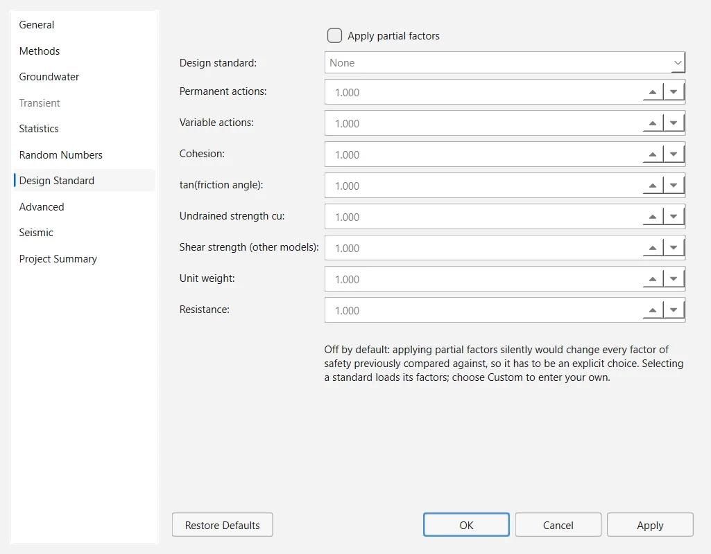

A design standard applies partial factors to the inputs of the analysis: strengths are divided, loads and unit weights multiplied. What comes out is then not a factor of safety but an over-design factor, which must exceed 1. OGR Slip2D offers the three design approaches of Eurocode 7 as four presets (DA1 Combination 1, DA1 Combination 2, DA2 and DA3) and lets you enter your own factors. The basis of the factors is in Section 3.12.
2.11.1The Design Standard page#
The factors are set in Analysis → Project Settings → Design Standard. Apply partial factors is off in a new project: applying factors silently would change every factor of safety computed before, so it has to be a deliberate choice. With it ticked, Design standard offers None, Eurocode 7 — DA1 Combination 1, Eurocode 7 — DA1 Combination 2, Eurocode 7 — DA2, Eurocode 7 — DA3 and Custom. Choosing a standard loads its factors into the eight boxes below; the boxes can be edited only under Custom (0.1 to 10).

| Field | Factor | Applied to |
|---|---|---|
| Permanent actions | γG | Nothing in version 0.1.235 (Section 2.11.5). |
| Variable actions | γQ | Multiplies the magnitude of every distributed load and line load. |
| Cohesion | γc′ | Divides the effective cohesion, and the intercept of the rapid-drawdown strength envelopes. |
| tan(friction angle) | γφ′ | Divides tan φ′, tan φb of the unsaturated strength, and the slope of the rapid-drawdown envelopes. |
| Undrained strength cu | γcu | Divides the undrained shear strength. |
| Shear strength (other models) | γτ | Divides the whole shear strength of the models that are neither c′–φ′ nor undrained. |
| Unit weight | γγ | Multiplies the unit weight and the saturated unit weight of every material. |
| Resistance | γR;e | Divides all four strength categories above, that is, the whole resisting side. |
2.11.2The presets#
The presets follow the design approaches of EN 1997-1, Annex A (CEN, 2004).
| Preset | γG | γQ | γc′ | γφ′ | γcu | γτ | γγ | γR;e |
|---|---|---|---|---|---|---|---|---|
| DA1 Combination 1 | 1.35 | 1.5 | 1.0 | 1.0 | 1.0 | 1.0 | 1.0 | 1.0 |
| DA1 Combination 2 | 1.0 | 1.3 | 1.25 | 1.25 | 1.4 | 1.25 | 1.0 | 1.0 |
| DA2 | 1.35 | 1.5 | 1.0 | 1.0 | 1.0 | 1.0 | 1.0 | 1.1 |
| DA3 | 1.35 | 1.5 | 1.25 | 1.25 | 1.4 | 1.25 | 1.0 | 1.0 |
The factor for Shear strength (other models) is not a factor of EN 1997-1: the presets set it equal to the γφ′ of the same set, so that a strength envelope that cannot be split into c′ and tan φ′ is reduced as the factor of safety itself would reduce it. This is a decision of the program, and you can change it under Custom.
2.11.3What is factored, and how#
The factors are applied to a copy of the project when an analysis starts; your model is never changed, and switching the standard off gives back the unfactored results exactly. Every analysis computes on that copy: Compute, each sample of Compute Statistics, the Drawdown Level Sweep, Optimize Surfaces, the back analysis of support force and the factors of safety of the transient stages.
Material factors divide and action factors multiply, so each one acts in the unfavourable direction. The friction angle is factored through its tangent, as Eurocode 7 specifies: with γφ′ = 1.25, a friction angle of 30° becomes 24.79°, not 24°. Each strength model declares which of the four categories its parameters belong to; a model that declares none is left unfactored, and the analysis notes name it. Support forces, seismic coefficients and pore pressures are used as entered.
Because the factored copy is an ordinary project, the methods of slices and the searches know nothing about design codes: a standard is a table of numbers, not a change to the mechanics. The analysis notes of a factored run start with the line Design standard applied: … — the reported value is an over-design factor, not a factor of safety, and must exceed 1, followed by what the standard asked for and was not applied.
Source: ogr_core/project/design_factors.py · ogr_core/project/settings.py2.11.4Reading the over-design factor#
With a standard applied, the status bar, the Results dock and the Interpret window caption the critical value Over-design factor instead of factor of safety. It is computed exactly as a factor of safety, but on the factored model, so the question it answers changes: a value above 1 means that the slope meets the limit state with the partial factors chosen (Frank et al., 2004).
When the four strength factors are equal to one value γ, the resistance factor is 1 and no load or unit weight is factored, every strength is divided by γ at every normal stress, and the over-design factor is the factor of safety divided by γ, in every method:
DA1 Combination 2 on a slope of c′–φ′ materials without external loads is that case, with γ = 1.25: a slope with a factor of safety of 1.30 has an over-design factor of 1.04.
Two cases deserve care. With Apply partial factors ticked and every factor at 1.0 (the None standard, for example), nothing changes, but the value is still captioned over-design factor; the analysis notes say that nothing was factored. And in version 0.1.235 the PDF report of File → Generate Report… does not record the standard: its table of global minimums labels the value Factor of Safety (FS) even when it is an over-design factor. State the standard in the report yourself.
2.11.5Limitations in version 0.1.235#
The program declares both and has not corrected them in this version:
- The permanent-action factor γG is not applied. The weight of the soil and the permanent loads carry no action factor, and every distributed or line load takes the variable factor γQ. The analysis notes say so whenever γG differs from 1. In consequence, on a model without external loads DA1 Combination 1 changes nothing — the over-design factor equals the factor of safety — and DA2 only divides the strengths by γR;e = 1.1.
- DA3 uses the A1 action factors (1.35 and 1.5), where EN 1997-1 applies the A2 factors (1.0 and 1.3) to the actions on a slope. Together with the first departure, DA3 therefore multiplies every load by 1.5 instead of 1.3. Under Custom you can enter the A2 value for the variable actions.